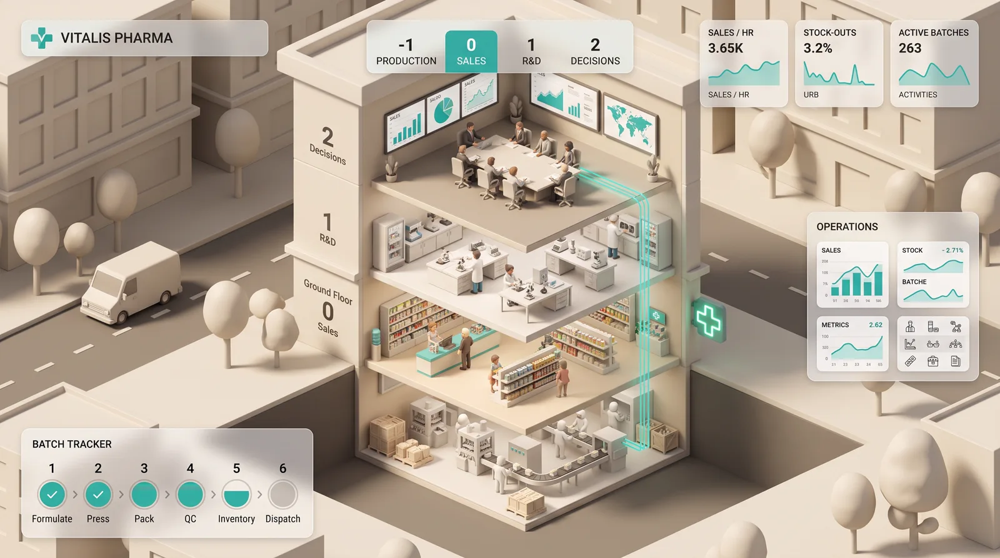

08 Gémeo digital 3D
Botica Alecrim Ops
Farmácia fictícia com fábrica própria, vista em corte em 3D. Cada piso faz uma parte do ciclo, e uma sala de decisão usa os dados de venda para planear a produção — explicando o porquê de cada escolha.

01 O projeto
O que é
Na cave produz-se, no rés-do-chão vende-se ao balcão, no primeiro piso a equipa de I&D lança produtos novos e no segundo decide-se. De hora a hora há reunião: plano de produção, promoções e prioridades, com os números que justificam cada decisão.
O dia passa a noite, os clientes chegam em ritmos realistas e há incidentes para gerir — uma avaria na linha, um pico de gripe, a recolha de um lote. É o irmão do Happy Hamburgers Ops, com o mesmo motor e HUD.
02 Funcionalidades
O que faz
- Edifício em corte com quatro pisos para explorar de perto
- Linha de produção em série com controlo de qualidade
- Balcão com senhas, filas e reforço nas horas de ponta
- Projetos de I&D que entram no catálogo quando terminam
- Reuniões de decisão com o raciocínio explicado
- Ciclo dia e noite e incidentes ao vivo
03 Tecnologia
A stack
Frontend
- React 19HUD e painéis
- Vite 8build e desenvolvimento
3D
- Three.jsrenderização WebGL
- React Three Fiber + dreicena em corte e transições entre pisos
Simulação
- Motor próprio em JavaScriptprodução, venda, I&D e decisão
- Modelo de chegadas aleatóriasclientes em ritmos realistas
Infra e qualidade
- Vercelalojamento
- Vitesttestes ao motor e às plantas
- oxlint + Prettierlint e formatação
04 Porquê assim
Decisões técnicas
Decisões explicáveis
Cada decisão da sala de reuniões vem com os números que a justificam. A simulação não é uma caixa negra.
Parâmetros num só sítio
Produtos, ritmos, procura e regras de decisão estão num único ficheiro de configuração. Afinar a farmácia não obriga a mexer no motor.
Cores seguras para daltonismo
Os produtos usam uma ordem de cores validada para quem não distingue bem verde e vermelho.